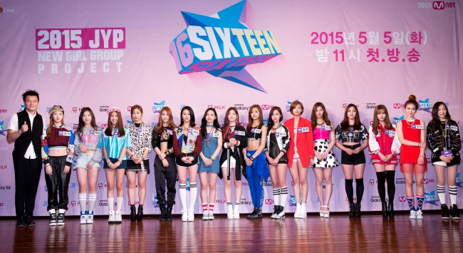

They started their journey on the survival show called “SIXTEEN”. The competition was based on your groupings and ranking. They were divided into groups called “Minor” and “Major”. Those who were in Major had a higher chance of being in the group and had more opportunities. Each of them shined individually but only seven (7) would get picked over sixteen (16) people. The survival show presented the hardships the girls went through. During episode six (6), Momo was eliminated from the show and was eventually brought back by JYP because of her exceptional dancing skills that the group might need. Even though only seven (7) people were chosen, Momo was brought back and Tzuyu became a part of Twice due to her popularity with the general public.